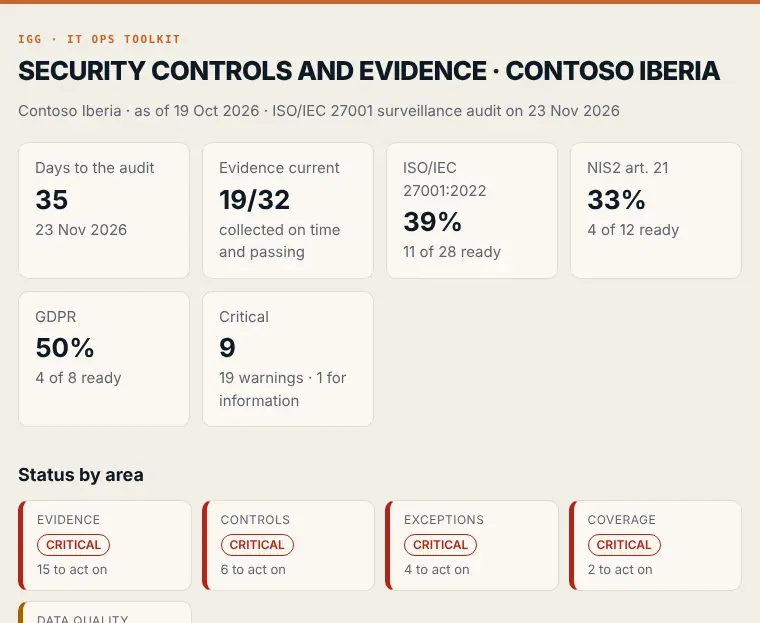

La mayoría de hallazgos de auditoría no son por falta de seguridad, sino por falta de pruebas: una prueba de restauración trimestral hecha en junio pero no en septiembre, un control marcado como implantado sin nada detrás, una excepción de DLP que caducó el mes pasado. Ese es el hueco que busca el registro de controles y evidencias que acompaña a este post. Su demo es una empresa inventada con 23 controles, 33 evidencias y 3 excepciones frente a 48 requisitos, a cinco semanas de una auditoría de seguimiento de ISO 27001, con brechas puestas a propósito.
El registro mapea cada control y su evidencia a ISO/IEC 27001:2022, NIS2 y RGPD a la vez. La misma prueba de restauración responde a los tres marcos, pero muchas veces la recogen tres personas tres veces, o nadie. Sus comprobaciones cubren evidencias, controles, excepciones, cobertura por requisito y calidad de los datos.
Cada requisito, cubierto, excluido, en riesgo o como brecha
Para la fecha de auditoría, cada requisito recibe uno de esos cuatro estados, con lo que lo impide. De ahí sale el grado de preparación de cada marco. Una copia inmutable del backup que falla sin estar relacionada con ningún control es el tipo de problema que el cruce saca a la luz.
La salida es un informe web con un plan de recogida a nueve semanas, un resumen para la revisión de seguridad, una lista de acciones, un índice audit-pack.csv para el auditor, un soa.csv en formato de Declaración de Aplicabilidad y evidence-calendar.ics con cada fecha de vencimiento.
Cómo usarlo con datos reales
Funciona con Python y solo la librería estándar, y trae 14 tests. El registro de controles y el índice de evidencias se exportan a CSV adaptando las columnas, los requisitos de cada auditoría se añaden al catálogo y el calendario se importa en el del equipo antes de cada revisión de seguridad.
De dónde sale
Nace de aplicar ISO 27001, NIS2 y RGPD en operaciones de IT, preparando evidencias y respondiendo auditorías. Aprendí que una evidencia bien guardada sirve para varios marcos, y que el calendario de lo que hay que recoger importa tanto como los propios controles.
¿Quieres llevarlo a tu entorno o adaptarlo a tu caso? Escríbeme y lo vemos.
Tech Career Lab · newsletter
¿Te ha servido? Cada dos semanas envío una idea práctica para perfiles IT: LinkedIn, proyectos, networking y procesos de selección.
Apúntate y llévate las 33 ideas →